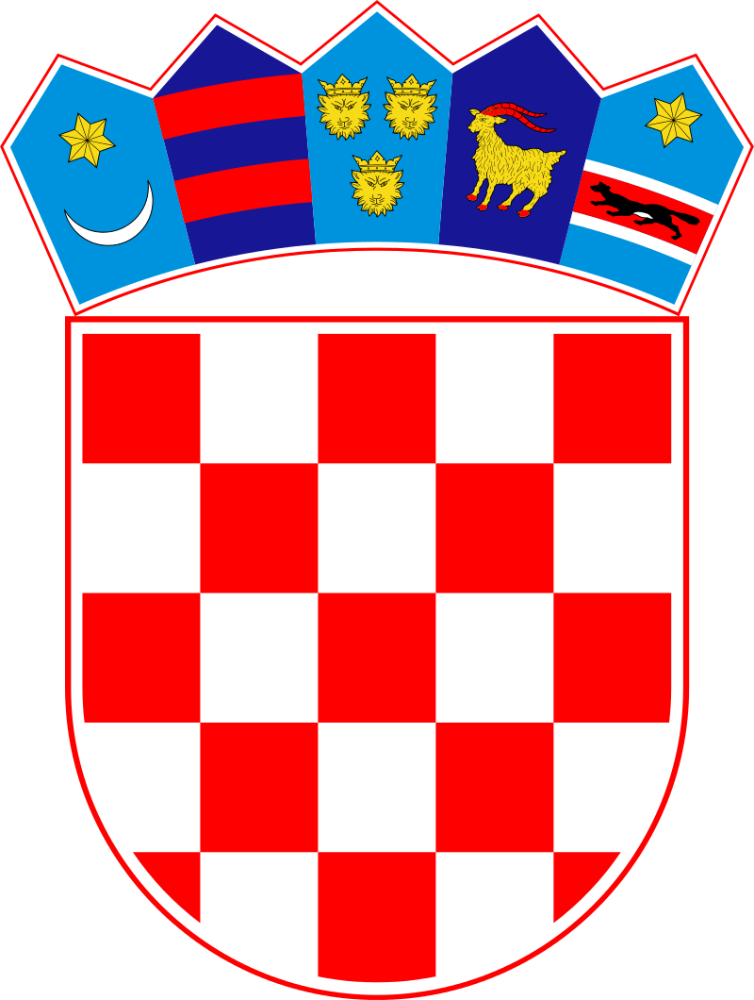
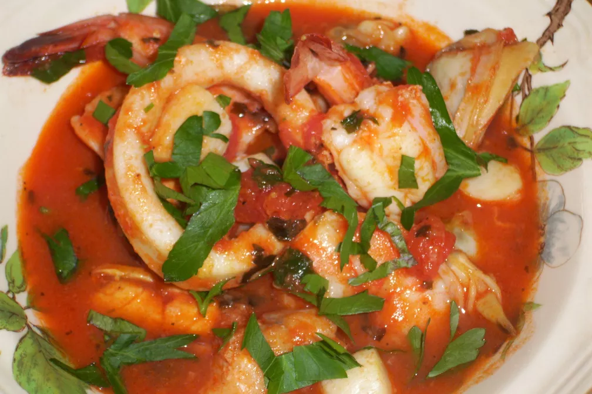

Brudet


A popular fish stew in Croatia, especially in the region of Dalmatia. It incorporates many types of fish, making it quite versatile and hearty!
Ingredients
- Mixed Fish and Seafood (White Firm Fish, Baby Scallops, Clams, Shrumps, Mussels, Calamari): 2 Ibs.
- Olive Oil: 3 tablespoons
- Diced Tomatoes: 1 can (28 oz.)
- Garlic Cloves, minced: 3-4
- Fresh Basil: 1 tablespoon
- Dry White Wine: 1/2 cup
- Fresh Parsley: 1 tablespoon (and more to sprinkle at the end)
- Black Pepper
- Sea Salt
- Saffron Threads: Pinch of 15-20 treads
Steps
- Clean and wash the fish and seafood (white fish should be cut into a one-inch piece).
- Heat olive oil, add garlic, basil, parsley and saffron. Cook for 30 seconds. When you can smell the garlic, add wine and let cook for 2-3 minutes.
- Add diced tomatoes, salt and pepper. Let cook for 10 minutes. At this point, you can stop if you are making for later or next day.
- For the boiling tomato stew, add fish and shrimps first, cover. Let cook 3-4 min, do not stir; just shake the pot.
- Add calamari, baby scallops, clams and mussels (I had clams and mussels precooked, or you will start Brudet with clams first), cover
- Cook everything for the next 2-3 minutes once it starts boiling again. Take from stove and sprinkle with parsley.
Source: Brudet (Croatian Seafood Stew)